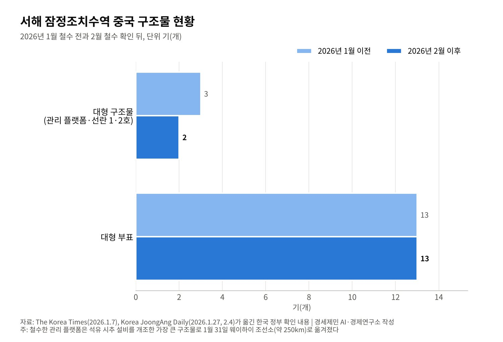
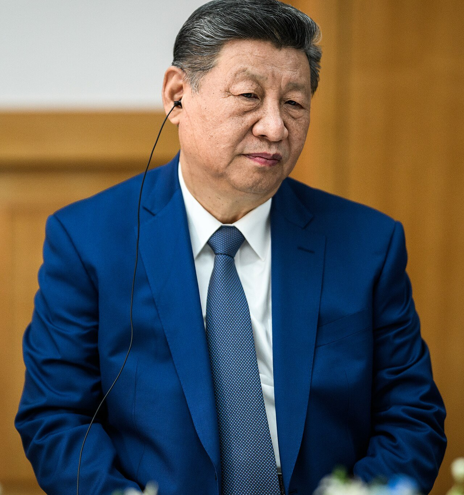

[정상외교] 2차 한중정상회담 아홉 달, 서해에서 옮겨진 것과 남은 것
가장 큰 '관리 플랫폼' 1월 말 웨이하이로 철수, 선란 1·2호와 부표 13개는 그대로
이 대통령 "선 그으면 가장 깔끔", 중국은 "기업의 자율 조정"…연내 차관급 회담은 아직
서해 경계는 남·북·중 세 나라의 문제, 북·중 해상 경계도 정해지지 않아
이재명 대통령은 2026년 1월 4일부터 7일까지 중국을 국빈 방문했다. 5일 베이징 인민대회당에서 시진핑 국가주석과 회담했다. 회담은 오후 4시47분에 시작해 6시17분에 끝나 예정보다 1시간가량 길어졌다.
시 주석은 두 나라가 「잦은 교류와 긴밀한 소통」을 이어가야 한다고 말했다. 두 달 사이 두 번 만났다고도 했다. 2025년 11월 경주 회담에 이은 두 번째 정상회담이다.
두 정상은 서해를 「평화와 공존의 바다」로 만들자고 했다. 중국이 일방적으로 설치한 구조물에는 건설적 협의를 이어가기로 했다. 아홉 달이 지난 지금 서해에서 무엇이 옮겨졌고 무엇이 남았는지 짚는다.
1. 정상회담이 남긴 문장
위성락 국가안보실장은 두 나라가 아직 해양경계를 확정하지 못했다고 밝혔다. 그동안 「자제와 책임 있는 행동」이 필요하다고 했다. 차관급 해양 회담을 연내 열기로 했다는 브리핑도 나왔다.
두 나라는 양해각서 14건을 맺었다. 통상협력대화 정례화, 과학기술, 지식재산, 식품안전, 수산물·동식물 검역, 기후환경 협의가 들어갔다. 국방 당국은 해마다 만나 소통을 넓히기로 했다.
이 대통령은 1월 7일 상하이에서 서해 구조물을 설명했다. 중국 쪽 설명으로는 양식시설 두 기와 관리시설 한 기가 있다. 「관리용은 중국이 철수하겠다고 했으니 옮겨질 것」이라고 했다.
이 대통령은 한국이 잠정조치수역에 중간선을 그어 관할을 나누자고 제안했다고 밝혔다. 「선을 그어 관할을 명확히 나누면 우리 입장에서 가장 깔끔하다」고 했다. 구조물의 근본 원인은 실무 협의로 풀기로 했다.
2. 옮겨진 것, 가장 큰 관리 플랫폼
중국 웨이하이 해사국은 1월 26일 항행경보를 냈다. 이튿날 밤 이동이 시작됐다. 1월 31일 플랫폼은 잠정조치수역을 벗어나 약 250km 떨어진 웨이하이 조선소에 닿았다. 외교부는 2월 3일 이를 확인했다.
미국 전략국제문제연구소(CSIS) 비욘드 패럴렐은 외교부 확인 하루 전에 위성사진으로 이동을 따로 확인한 보고서를 냈다. 국제 연구기관이 정부 발표보다 먼저 바다를 들여다본 셈이다.
옮겨진 시설은 부속 설비가 아니었다. 석유 시추 설비를 고친 반고정식 구조물로, 헬기 착륙장이 있고 20명 넘게 머물 수 있다. 세 구조물 가운데 가장 크다. 한국 외교관들은 이를 「관리 플랫폼」이라 불렀다.
대통령실은 1월 28일 중국의 이전 결정을 긴장 완화의 「의미 있는 진전」이라고 평가했다. 강영신 외교부 동북아시아국장은 한중관계 발전에 도움이 될 변화라고 했다.

3. 남은 것, 선란 1·2호와 부표 13개
중국 정부의 설명은 다르다. 궈자쿤 외교부 대변인은 이전이 기업의 운영과 발전 필요에 따른 「자율적 조정」이라고 말했다. 외교 요청이나 정치적 압력 때문이 아니라는 뜻이다.
궈 대변인은 서해 남부 양식시설에 대한 중국의 입장이 바뀌지 않았다고 했다. 주한 중국대사관도 2월 5일 입장에 「변화가 없다」고 밝혔다. 다이빙 주한 중국대사는 남은 시설이 군사시설이 아닌 심해 연어 양식장이라고 했다.
다이 대사는 이 시설이 유엔해양법협약을 어기지 않는다고 덧붙였다. 잠정조치수역에는 선란 1호와 2호, 부표 13개가 그대로 남았다. 한국 외교 소식통은 중국이 두 양식시설 이전에는 「주저한다」고 전했다.
전문가들은 정부 발표와 다른 해석을 내놓는다. 이동규 아산정책연구원 연구위원은 이번 조치가 한국의 경계심을 낮추려는 것으로 봤다. 기업 결정으로 포장해 정부의 영향력 확대라는 비판을 피했다고 했다.
강준영 한국외국어대 교수는 남은 시설을 용인하면 경계 획정의 기준선이 흔들릴 수 있다고 경고했다. 중국 논리를 따르면 경계가 한국 쪽으로 70km가량 밀릴 수 있다며, 잠정조치수역을 구조물 없는 수역으로 만들어야 한다고 했다.
4. 어업협정이 만든 회색지대
구조물이 들어선 잠정조치수역은 2000년 한중어업협정이 만든 공간이다. 두 나라는 배타적경제수역(EEZ) 경계를 협상하는 동안 충돌을 막으려고 겹치는 바다를 함께 관리하기로 했다.
경계를 정하지 않은 바다에서는 먼저 시설을 세운 쪽이 사실을 쌓는다. 중국이 양식장이라 부르는 시설도 오래 머물면 「관리해 온 수역」이라는 주장의 근거가 될 수 있다. 이 대통령이 중간선 제안을 공개한 까닭이다.
빅터 차 CSIS 한국석좌는 2017년 사드 갈등 때 중국의 경제 보복을 회색지대 전략의 전형으로 들었다. 서해 구조물도 군사 충돌의 문턱 아래에서 사실을 바꾸는 같은 방식으로 읽힌다.
5. 서해는 세 나라의 바다, 통킹만이 보여준 시간
서해 경계를 한중 두 나라 문제로만 보면 절반만 본다. 북쪽에는 북한이 있다. 1953년 정전협정은 육상 군사분계선만 긋고 해상 경계선에는 합의하지 못했다. 서해 5도만 유엔군사령부 관할로 남겼다.
북방한계선(NLL)은 정전 뒤 유엔군사령부가 그은 것으로 널리 알려져 있으나 원본 문서는 확인되지 않았다. 정전 협상 때 유엔군사령부는 영해 3해리를, 북한은 12해리를 주장했다. 북한은 1999년 9월 더 남쪽에 「서해 해상군사분계선」을 선포했다.
북한과 중국 사이 바다도 비어 있다. 1962년 조중변계조약과 1964년 의정서는 압록강과 두만강, 백두산의 육상 경계와 강의 섬을 나눴다. 서해의 해상 경계는 다루지 않았다.
남·북·중 세 나라의 주장이 만나는 지점이 정해지지 않는 한 서해 경계는 끝나지 않는다. 한중 협상은 그 퍼즐의 한 조각이다. 남북 대화가 끊긴 지금 그 조각을 맞출 테이블은 한중 사이에만 놓여 있다.
그렇다고 길이 없는 것은 아니다. 중국은 바다 경계를 협정으로 확정한 경험이 있다. 베트남과 중국은 2000년 12월 25일 통킹만 경계획정 협정에 서명했다. 협정은 2004년 6월 30일 발효했다. 서명부터 발효까지 3년 반이 더 걸렸다.
통킹만은 서해처럼 반쯤 닫힌 바다이고, 두 나라 주장이 겹쳤다. 선례는 중국도 정치적 필요가 있으면 경계에 서명한다는 점을 보여준다. 동시에 협상과 비준에 오랜 시간이 든다는 점도 보여준다.
6. 연내 회담 약속, 남은 두 달
정상들이 약속한 차관급 해양 회담이 10월 21일까지 열렸다는 정부 발표는 찾지 못했다. 2월 보도는 1분기 외교장관 회담 계획만 전했고 경계 회담 일정은 나오지 않았다.
그사이 미중 정상은 두 번 오갔다. 트럼프 대통령은 5월 14~15일 베이징을 찾았고, 시 주석은 9월 24일 워싱턴을 국빈 방문했다. 미중이 가까워질수록 서해 문제는 한중 두 나라가 직접 풀어야 할 몫으로 남는다.

다음 무대는 11월 18~19일 중국 선전 APEC 정상회의다. 관리 플랫폼 철수는 정상 간 합의가 바다 위 시설을 움직일 수 있음을 보여줬다. 남은 두 양식시설과 부표는 경계 획정 회담이 열려야 다룰 수 있다.
중국은 기업의 자율 조정이라고 했고 한국은 의미 있는 진전이라고 했다. 같은 사건을 두고 두 정부의 설명이 갈린다. 그 간극을 메우는 길은 선을 긋는 협상뿐이다. 약속한 회담을 올해 안에 여는지가 서해의 다음 아홉 달을 정한다.
참고문헌
기관 자료
- 대한민국 국가안보실(위성락 실장 브리핑), 한중 정상회담 결과, 2026년 1월 5일(The Korea Times·연합뉴스 보도로 확인)
- The White House, "President Donald J. Trump and First Lady Melania Trump Host China for a State Visit"(사진첩), 2026년 9월 24일. https://www.flickr.com/photos/whitehouse/albums/72177720335941919
언론 보도
- The Korea Times, "Leaders of Korea, China agree to expand cultural exchanges, address West Sea structure issue", 2026년 1월 5일. https://www.koreatimes.co.kr/foreignaffairs/20260105/leaders-of-korea-china-hold-summit-in-beijing-as-lee-casts-2026-as-turning-point-in-ties
- The Korea Times, "Korea, China sign 14 MOUs on cooperation in technology, environment, other areas", 2026년 1월 5일. https://www.koreatimes.co.kr/foreignaffairs/20260105/korea-china-sign-14-mous-on-cooperation-in-technology-environment-other-areas
- The Korea Times(연합뉴스), "Lee, Xi agree on importance of resuming talks with NK: security adviser", 2026년 1월 6일. https://www.koreatimes.co.kr/foreignaffairs/20260106/lee-xi-agree-on-importance-of-resuming-talks-with-nk-security-adviser
- Anna J. Park, "China to remove West Sea structures, Korean president says", The Korea Times, 2026년 1월 7일. https://www.koreatimes.co.kr/foreignaffairs/20260107/china-to-remove-west-sea-structures-korean-president-says
- Korea JoongAng Daily, "China begins relocating contentious maritime structure in disputed Yellow Sea zone", 2026년 1월 27일. https://www.koreajoongangdaily.com/korea/china-begins-relocating-contentious-maritime-structure-in-disputed-yellow-sea-zone/12451701
- Korea JoongAng Daily, "Korea calls China's move to relocate Yellow Sea structures 'meaningful step' in reducing tensions", 2026년 1월 28일. https://www.koreajoongangdaily.com/korea/korea-calls-chinas-move-to-relocate-yellow-sea-structures-meaningful-step-in-reducing-tensions/12246707
- Korea JoongAng Daily, "China's relocation of contentious sea platform eases tensions with Korea, but hints at ulterior motives", 2026년 2월 4일. https://www.koreajoongangdaily.com/korea/chinas-relocation-of-contentious-sea-platform-eases-tensions-with-korea-but-hints-at-ulterior-motives/11988330
- The Korea Times, "Chinese officials to visit Korea to discuss bilateral ties, Saemangeum cooperation", 2026년 10월 19일. https://www.koreatimes.co.kr/foreignaffairs/20261019/chinese-officials-to-visit-korea-to-discuss-bilateral-ties-saemangeum-cooperation
- 경향신문 영문판, "Trump holds a 30-minute call with President Lee"(5월 14~15일 미중 정상회담 언급), 2026년 5월 18일. https://www.khan.co.kr/en/article/202605180734027
- Bloomberg, "Trump Briefs South Korea's Lee After Summit in Beijing", 2026년 5월 18일. https://www.bloomberg.com/news/articles/2026-05-18/trump-briefs-south-korea-s-lee-after-summit-in-beijing
- The Korea Times, "Trump's 'I don't know' clouds prospect of meeting Kim Jong-un at APEC", 2026년 10월 20일. https://www.koreatimes.co.kr/foreignaffairs/northkorea/20261020/trumps-i-dont-know-clouds-prospect-of-meeting-kim-jong-un-at-apec
- Wikipedia, "Northern Limit Line"(Ryoo 2009, Roehrig 2011, CIA 1974 등 인용), 2026년 10월 21일 열람. https://en.wikipedia.org/wiki/Northern_Limit_Line
- Wikipedia, "China–North Korea border"(Fravel 2005 등 인용), 2026년 10월 21일 열람. https://en.wikipedia.org/wiki/China–North_Korea_border
- Wikipedia, "Gulf of Tonkin"(베트남 정보통신부·VietnamPlus 인용), 2026년 10월 21일 열람. https://en.wikipedia.org/wiki/Gulf_of_Tonkin
[사진 출처]
- [사진1] The White House, "2025 Chinese President Xi Jinping at the Gimhae International Airport in South Korea - (cropped).jpg", 위키미디어 공용, 퍼블릭 도메인. https://commons.wikimedia.org/wiki/File:2025_Chinese_President_Xi_Jinping_at_the_Gimhae_International_Airport_in_South_Korea_-_(cropped).jpg
※ 이 기사는 AI 프로그램 클로드를 활용해 작성했습니다.
관련기사
- [정상외교] 같은 동맹 같은 청구서, 유럽이 한국의 대미 협상을 지켜본 이유
- [정상외교] 한미정상회담 해외언론 다시 읽기, 1년 뒤 남은 것과 사라진 것
- [정상외교] 한중 하늘길 7년 만에 넓혔지만 자유화는 20년째 시범, 비자가 먼저 열린 이유
- [동맹과 국방] 군사력 세계 5위 한국, 자주국방은 어디까지 왔고 동맹은 무엇을 요구하나
저작권자 © AI경세제민 무단전재 및 재배포, AI학습 및 활용 금지